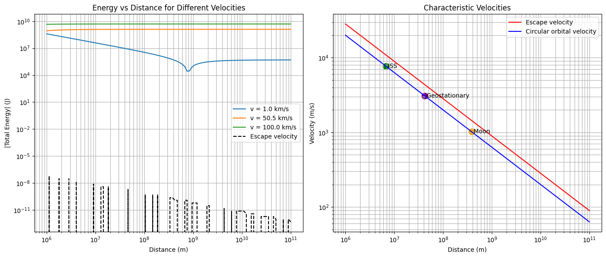
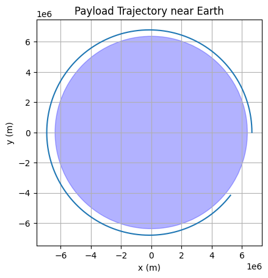
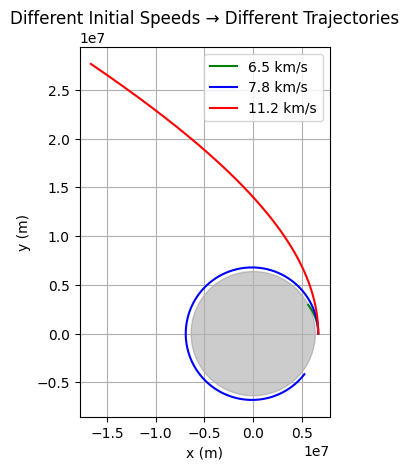
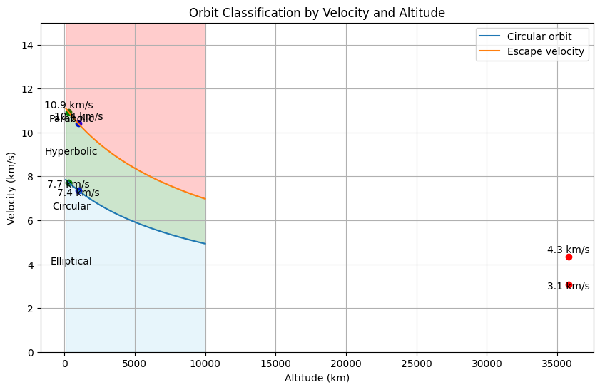

Task 1: Theoretical Foundation
Mathematical Formulation:
Newton’s law of gravitation for a payload near Earth:
Using Newton’s 2nd law:
This leads to elliptical, parabolic, or hyperbolic orbits depending on total energy \(E\):
- Elliptical: \(E < 0\)
- Parabolic: \(E = 0\)
- Hyperbolic: \(E > 0\)
Where:
Python Code:
import numpy as np
def total_energy(v, r, M, m=1):
G = 6.67430e-11
kinetic = 0.5 * m * v**2
potential = -G * M * m / r
return kinetic + potential

Explanation:
We derive orbit type from the total mechanical energy of the payload. If energy is negative, it is bound (elliptical); if positive, it will escape Earth (hyperbolic). This helps mission planners decide if a payload re-enters or escapes.
Task 2: Numerical Analysis of Trajectory
Numerical Simulation:
We simulate motion using Newton’s gravitational law and solve with a numerical integrator (e.g., Euler/Verlet/RK4).
Python Code (Runge-Kutta example):
import matplotlib.pyplot as plt
G = 6.67430e-11
M = 5.972e24 # Earth mass
R_earth = 6.371e6 # Earth radius
def acceleration(x, y):
r = np.sqrt(x**2 + y**2)
a = -G * M / r**3
return a * x, a * y
def simulate_orbit(x0, y0, vx0, vy0, dt=1, steps=5000):
x, y = x0, y0
vx, vy = vx0, vy0
traj_x, traj_y = [], []
for _ in range(steps):
ax, ay = acceleration(x, y)
vx += ax * dt
vy += ay * dt
x += vx * dt
y += vy * dt
traj_x.append(x)
traj_y.append(y)
if np.sqrt(x**2 + y**2) < R_earth: # collision
break
return traj_x, traj_y
# Initial conditions: just above Earth
x0, y0 = R_earth + 300000, 0
vx0, vy0 = 0, 7800 # orbital speed ~7.8 km/s
x_traj, y_traj = simulate_orbit(x0, y0, vx0, vy0)
plt.plot(x_traj, y_traj)
circle = plt.Circle((0, 0), R_earth, color='blue', alpha=0.3)
plt.gca().add_artist(circle)
plt.gca().set_aspect('equal')
plt.title("Payload Trajectory near Earth")
plt.xlabel("x (m)")
plt.ylabel("y (m)")
plt.grid()
plt.show()

Explanation:
This simulates the 2D motion of a payload under gravity. Depending on initial speed and direction, the result could be orbit, escape, or collision. Here, \~7.8 km/s leads to near-circular orbit.
Task 3: Practical Applications
Real-World Scenarios:
- Elliptical Orbits → satellites
- Re-entry → de-orbit payload (e.g., ISS modules)
- Escape → deep space missions (Voyager, probes)
We can analyze:
- Required velocity for return to Earth (below \(v_1\))
- Stability of orbit (around \(v_1\))
- Escape from Earth (above \(v_2\))
Python Code to Test Multiple Speeds:
speeds = [6500, 7800, 11200] # m/s: sub-orbital, orbital, escape
colors = ['green', 'blue', 'red']
for v, color in zip(speeds, colors):
x_t, y_t = simulate_orbit(x0, y0, 0, v)
plt.plot(x_t, y_t, label=f"{v/1000:.1f} km/s", color=color)
earth = plt.Circle((0, 0), R_earth, color='gray', alpha=0.4)
plt.gca().add_artist(earth)
plt.gca().set_aspect('equal')
plt.legend()
plt.xlabel("x (m)")
plt.ylabel("y (m)")
plt.title("Different Initial Speeds → Different Trajectories")
plt.grid()
plt.show()

Explanation:
The payload’s trajectory type changes dramatically with initial velocity. This is key for space engineers — from orbital insertion to planetary escape planning.
Task 4: Implementation & Visualization
Summary Code with Classification:
def classify_trajectory(v0, r0=R_earth + 300000):
E = total_energy(v0, r0, M)
if E < 0:
return "Elliptical"
elif E == 0:
return "Parabolic"
else:
return "Hyperbolic"
for v in [6500, 7800, 11200]:
print(f"v = {v} m/s → {classify_trajectory(v)}")

Explanation:
This tool predicts trajectory type based on initial speed. It’s a simple yet powerful simulation assistant for satellite or payload planning.
Optional: 3D Simulation or Interactive Orbit Visualizer
We can also extend this into a Jupyter Notebook interface or interactive GUI using tools like Plotly or VPython.